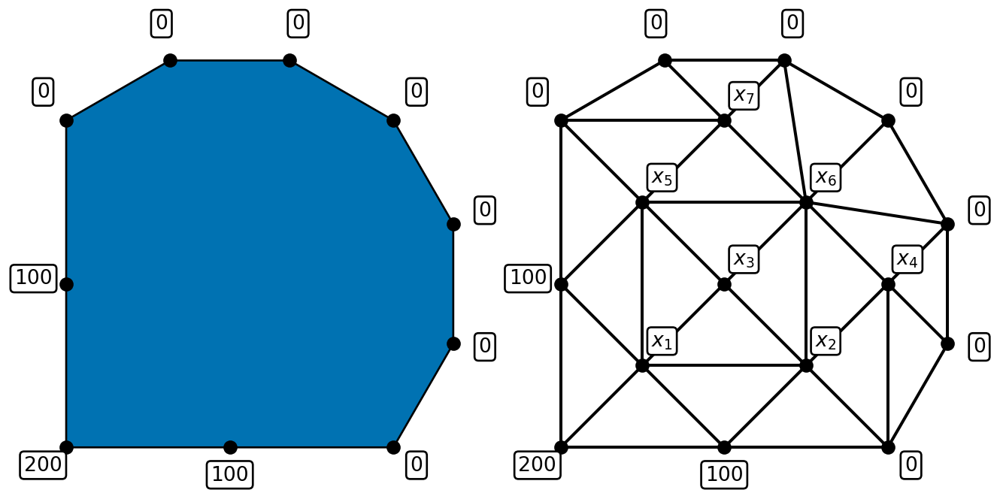
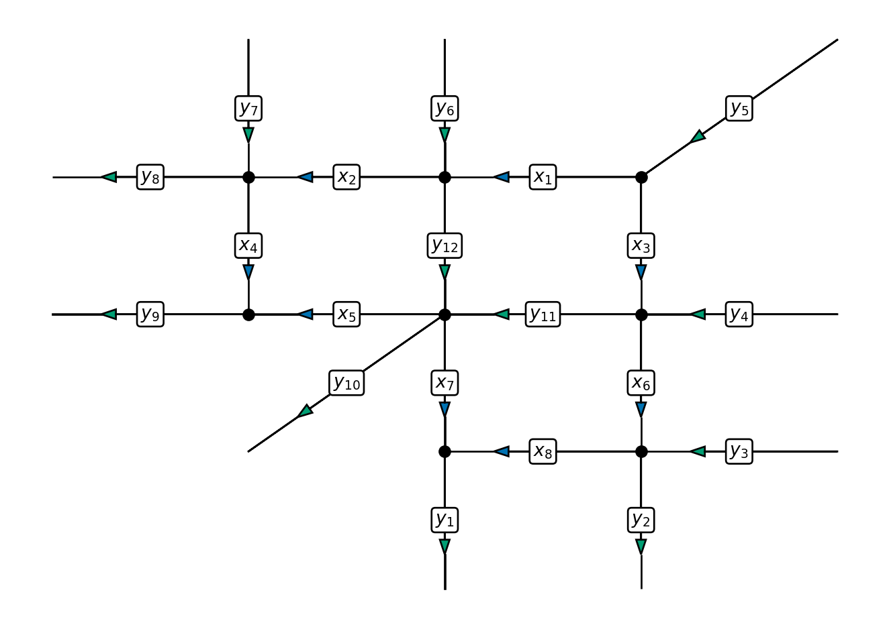
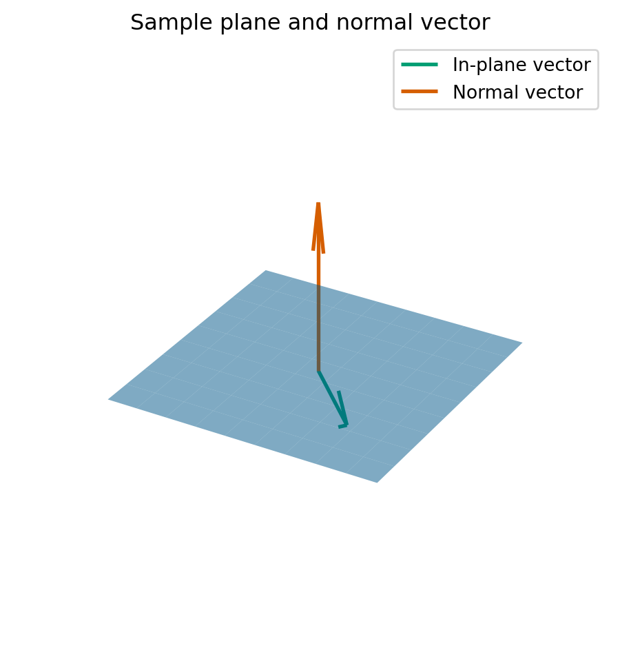

COMP2870 Theoretical Foundations: Linear Algebra
1 Introduction
1.1 Contents of this submodule
This part of the module will deal with numerical algorithms that involve matrices. The study of this type of problem is called linear algebra. We will approach these problems using a combination of theoretical ideas and practical solutions, thinking through the lens of real-world applications. As a consequence, to succeed in linear algebra, you will do some programming (using Python) and some pen-and-paper theoretical work, too.
1.1.1 Topics
We will have 7 double lectures, 3 tutorials, and 3 labs. We break up the topics as follows:
Lectures
- Introduction and motivation, key problem statements (Week 4, Mon)
- When can we solve systems of linear equations? (Week 4, Wed)
- Direct methods for systems of linear equations (Week 5, Mon)
- Iterative solution of linear equations (Week 5, Wed)
- Complex numbers (Week 6, Mon)
- Eigenvalues and eigenvectors (Week 6, Wed)
- Practical solutions for eigenvalues and eigenvectors / Summary (Week 7, Mon)
Labs
- Floating point numbers (Week 4)
- When can we solve systems of linear equations? (Week 5)
- Systems of linear equations (Week 6)
- Eigenvalues and eigenvectors (Week 7)
Tutorials
- Linear independence, span, basis (Week 5)
- Solution of linear systems (Week 6)
- Eigenvalue and eigenvectors (Week 7)
Later this term, week 11, you will complete a project based on the things you’ve learnt from this section of the module.
1.1.2 Learning outcomes
Candidates should be able to:
- explain practical challenges working with floating-point numbers;
- define and identify what it means for a set of vectors to be a basis, spanning set or linearly independent;
- apply direct and iterative solvers to solve systems of linear equations; implement methods using floating point numbers and investigate computational cost using computer experiments;
- apply algorithms to compute eigenvectors and eigenvalues of large matrices.
1.2 Textbooks and other resources
There are many textbooks and other external resources which could help your learning:
Introduction to Linear Algebra (Fifth Edition), Gilbert Strang, Wellesley-Cambridge Press, 2016. with MIT course material. Strongly recommended book and YouTube lecture series
Scientific Computing: An Introductory Survey, T.M. Heath, McGraw-Hill, 2002. Some lecture notes based on the book
Engineering Mathematics, K.A. Stroud, Macmillan, 2001. available online
Numerical Recipes in C++/C/FORTRAN: The Art of Scientific Computing, W.H. Press, S.A. Teukolsky, W.T. Vetterling and B.P. Flannery, Cambridge University Press, 2002/1993/1993. A very practical view of the methods we develop in this module which could be used for library development
Other links and resources are given at the end of each section of the notes.
1.3 Programming
This section of the notes links theoretical material with practical applications. We will have weekly lab sessions where you will see how the methods mentioned in the lecture notes work when implemented. More instructions on how we will do this will be covered in the lab sessions themselves.
An important theoretical aspect of translating the algorithms in linear algebra to computer implementations is the use of floating-point numbers. You will have already met floating-point numbers in your first year studies where you met how computer store numbers. You will already know that computer cannot store every possible real number exactly. The inexactness of floating-point numbers has real consequences when performing linear algebra computations.
Exploring and understanding the material in (Chapter 2) is really helpful for understanding many of the choices that we make when forming methods in linear algebra.
We will make extensive use of Python and numpy during this section of the module. It may help you to revise some of your notes from last year on these topics.
1.4 The big problems in linear algebra
We will cover two big linear algebra problems in this section of the module. Linear algebra can be defined as the study of problems involving matrices and vectors.
1.4.1 Reminder of matrices and vectors
There are two important objects we will work with that were defined in your first-year Theoretical Foundations module (COMP1870).
Definition 1.1 A matrix is a rectangular array of numbers called entries or elements of the matrix. A matrix with \(m\) rows and \(n\) columns is called an \(m \times n\) matrix or \(m\)-by-\(n\) matrix. We may additionally say that the matrix is of order \(m \times n\). If \(m = n\), then we say that the matrix is square.
Example 1.1 \(A\) is a \(4 \times 4\) matrix and \(B\) is a \(3 \times 4\) matrix: \[\begin{align*} A = \begin{pmatrix} 10 & 1 & 0 & 9 \\ 12.4 & 6 & 1 & 0 \\ 1 & 3.14 & 1 & 0 \end{pmatrix} \quad B = \begin{pmatrix} 0 & 6 & 3 & 1 \\ 1 & 4 & 1 & 0 \\ 7 & 0 & 10 & 20 \end{pmatrix} \quad C = \begin{pmatrix} 4 & 1 & 8 & -1 \\ 1.5 & 1 & 3 & 4 \\ 6 & -4 & 2 & 8 \end{pmatrix} \end{align*}\]
Exercise 1.1
- Compute, if defined, \(A + B\), \(B + C\).
- Compute, if defined, \(A B\), \(B A\), \(B C\) (here, by writing matrices next to each other we mean the matrix product).
When considering systems of linear equations, the entries of the matrix will always be real numbers (later we will explore using complex numbers (Chapter 6) too)
Definition 1.2 A column vector, often just called a vector, is a matrix with a single column. A matrix with a single row is a row vector. The entries of a vector are called components. A vector with \(n\) rows is called an \(n\)-vector.
Example 1.2 \(\vec{a}\) is a row vector, \(\vec{b}\) and \(\vec{c}\) are (column) vectors. \[\begin{align*} \vec{a} = \begin{pmatrix} 0 & 1 & 7 \end{pmatrix} \quad \vec{b} = \begin{pmatrix} 0 \\ 1 \\ 3.1 \\ 7 \end{pmatrix} \quad \vec{c} = \begin{pmatrix} 4 \\ 6 \\ -4 \\ 0 \end{pmatrix}. \end{align*}\]
Exercise 1.2
- Compute, if defined, \(\vec{b} + \vec{c}\), \(0.25 \vec{c}\).
- What is the meaning of \(\vec{b}^T \vec{c}\)? (Here, we are interpreting the vectors as matrices).
- Compute, if defined, \(B \vec{b}\).
Example 1.3 (Some special matrices) It will be helpful to remember some special matrices during this seciton of the module.
A rotation matrix is a \(2 \times 2\) matrix given by \[\begin{equation} R(\theta) = \begin{pmatrix} \cos \theta & -\sin \theta \\ \sin \theta & \cos \theta \end{pmatrix}. \end{equation}\] This matrix describes an anti-clockwise rotation by \(\theta\) (in radians).
The projection operator maps vectors onto either lines or planes which pass through the origin (\(\vec{0}\)).
For projection onto a line \(L = \{ \lambda \vec{a} : \lambda \in \mathbb{R} \}\), we can write this transformation as: \[\begin{equation*} \vec{x} \mapsto \vec{a} \cdot \vec{x} \vec{a} = (\vec{a} \otimes \vec{a}) \vec{x}, \end{equation*}\] where \(\otimes\) is the outer product. For two \(n\)-vectors \(\vec{a}\) and \(\vec{b}\), \(\vec{a} \otimes \vec{b}\) is an \(n \times n\) with entries: \[\begin{equation*} (\vec{a} \otimes \vec{b})_{ij} = a_i b_j. \end{equation*}\]
For projection onto a plane \(\Pi = \{ \lambda \vec{a} + \mu \vec{b} : \lambda, \mu \in \mathbb{R} \}\), we can rite the projection operator as: \[\begin{equation*} \vec{x} \mapsto (\vec{a} \otimes \vec{a} + \vec{b} \otimes \vec{b}) \vec{x}. \end{equation*}\]
1.4.2 Systems of linear equations
Given an \(n \times n\) matrix \(A\) and an \(n\)-vector \(\vec{b}\), find the \(n\)-vector \(\vec{x}\) which satisfies: \[\begin{equation} \label{eq:sle} A \vec{x} = \vec{b}. \end{equation}\]
We can also write \(\eqref{eq:sle}\) as a system of linear equations: \[\begin{align*} \text{Equation 1:} && a_{11} x_1 + a_{12} x_2 + a_{13} x_3 + \cdots + a_{1n} x_n & = b_1 \\ \text{Equation 2:} && a_{21} x_1 + a_{22} x_2 + a_{23} x_3 + \cdots + a_{2n} x_n & = b_2 \\ \vdots \\ \text{Equation i:} && a_{i1} x_1 + a_{i2} x_2 + a_{i3} x_3 + \cdots + a_{in} x_n & = b_i \\ \vdots \\ \text{Equation n:} && a_{n1} x_1 + a_{n2} x_2 + a_{n3} x_3 + \cdots + a_{nn} x_n & = b_n. \end{align*}\]
Notes:
The values \(a_{ij}\) are known as coefficients.
The right hand side values \(b_i\) are known and are given to you as part of the problem.
\(x_1, x_2, x_3, \ldots, x_n\) are not known and are what you need to find to solve the problem.
Many computational algorithms require the solution of linear equations, e.g. in fields such as
- Scientific computation;
- Network design and optimisation;
- Graphics and visualisation;
- Machine learning.
Typically, these systems are very large (\(n \approx 10^9\)).
It is therefore important that this problem can be solved
- accurately: we are allowed to make small errors but not big errors;
- efficiently: we need to find the answer quickly;
- reliably: we need to know that our algorithm will give us an answer that we are happy with.
Example 1.4 (Temperature in a sealed room) Suppose we wish to estimate the temperature distribution inside an object:
We can place a network of points inside the object and use the following model: the temperature at each interior point is the average of its neighbours.
This example leads to the system:
\[ \begin{pmatrix} 1 & -1/6 & -1/6 & 0 & -1/6 & 0 & 0 \\ -1/6 & 1 & -1/6 & -1/6 & 0 & -1/6 & 0 \\ -1/4 & -1/4 & 1 & 0 & -1/4 & -1/4 & 0 \\ 0 & -1/5 & 0 & 1 & 0 & -1/5 & 0 \\ -1/6 & 0 & -1/6 & 0 & 1 & -1/6 & -1/6 \\ 0 & -1/8 & -1/8 & -1/8 & -1/8 & 1 & -1/8 \\ 0 & 0 & 0 & 0 & -1/5 & -1/5 & 1 \end{pmatrix} \begin{pmatrix} x_1 \\ x_2 \\ x_3 \\ x_4 \\ x_5 \\ x_6 \\ x_7 \end{pmatrix} = \begin{pmatrix} 400/6 \\ 100/6 \\ 0 \\ 0 \\ 100/6 \\ 0 \\ 0 \end{pmatrix}. \]
Example 1.5 (Traffic network) Suppose we wish to monitor the flow of traffic in a city centre:

As the above example shows, it is not necessary to monitor every single road. If we know all of the \(y\) values, we can calculate the \(x\) values!
This example leads to the system:
\[ \begin{pmatrix} 1 & 0 & 1 & 0 & 0 & 0 & 0 & 0 \\ 1 & -1 & 0 & 0 & 0 & 0 & 0 & 0 \\ 0 & 1 & 0 & -1 & 0 & 0 & 0 & 0 \\ 0 & 0 & 1 & 0 & 0 & -1 & 0 & 0 \\ 0 & 0 & 0 & 0 & 1 & 0 & 1 & 0 \\ 0 & 0 & 0 & 1 & 1 & 0 & 0 & 0 \\ 0 & 0 & 0 & 0 & 0 & 1 & 0 & -1 \\ 0 & 0 & 0 & 0 & 0 & 0 & 1 & 1 \end{pmatrix} \begin{pmatrix} x_1 \\ x_2 \\ x_3 \\ x_4 \\ x_5 \\ x_6 \\ x_7 \\ x_8 \end{pmatrix} = \begin{pmatrix} y_5 \\ y_{12} - y_6 \\ y_8 - y_7 \\ y_{11} - y_4 \\ y_{11} + y_{12} - y_{10} \\ y_9 \\ y_2 - y_3 \\ y_1 \end{pmatrix}. \]
1.4.3 Eigenvalues and eigenvectors
For this problem, we will think of a matrix \(A\) acting on functions \(\vec{x}\): \[\begin{equation*} \vec{x} \mapsto A \vec{x}. \end{equation*}\] We are interested in when is the output vector \(A \vec{x}\) is parallel to \(\vec{x}\)?
Definition 1.3 We say that any vector \(\vec{x}\), where \(A \vec{x}\) is parallel is \(\vec{x}\), is called an eigenvector of \(A\). Here by parallel, we mean that there exists a number \(\lambda\) (can be positive, negative or zero) such that \[\begin{equation} \label{eq:evalues} A \vec{x} = \lambda \vec{x}. \end{equation}\] We call the associated number \(\lambda\) an eigenvalue of \(A\).
We will later see that an \(n \times n\) square matrix always has \(n\) eigenvalues (which may not always be distinct).
To help with our intuition here, we start with some simple examples:
Example 1.6 Let \(A\) be the \(2 \times 2\) matrix that scales any input vector by \(a\) in the \(x\)-direction and by \(b\) in the \(y\)-direction. We can write this matrix as \[\begin{equation*} A = \begin{pmatrix} a & 0 \\ 0 & b \end{pmatrix}, \end{equation*}\] since then for a 2-vector \(\vec{x} = (x, y)^T\), we have \[\begin{equation*} A \vec{x} = \begin{pmatrix} a & 0 \\ 0 & b \end{pmatrix} \begin{pmatrix} x \\ y \end{pmatrix} = \begin{pmatrix} a x + 0 y \\ 0 x + b y \end{pmatrix} = \begin{pmatrix} a x \\ b y \end{pmatrix}. \end{equation*}\]
Then, we infer we have two eigenvalues and two eigenvectors: One eigenvalue is \(a\) with eigenvector \((1, 0)^T\) and the other is \(b\) with eigenvector \((0, 1)^T\) since: \[\begin{align*} \begin{pmatrix} a & 0 \\ 0 & b \end{pmatrix} \begin{pmatrix} 1 \\ 0 \end{pmatrix} & = \begin{pmatrix} a \\ 0 \end{pmatrix} = a \begin{pmatrix} 1 \\ 0 \end{pmatrix} \\ \begin{pmatrix} a & 0 \\ 0 & b \end{pmatrix} \begin{pmatrix} 0 \\ 1 \end{pmatrix} & = \begin{pmatrix} 0 \\ b \end{pmatrix} = b \begin{pmatrix} 0 \\ 1 \end{pmatrix}. \end{align*}\]
Example 1.7 Let \(P\) be the 3x3 matrix that represents projection onto a plane \(\pi\). What are the eigenvalues and eigenvectors of \(p\)?

If \(\vec{x}\) is in the plane \(\Pi\), then \(P \vec{x} = \vec{x}\). This means that \(\vec{x}\) is an eigenvector and the associated eigenvalue is \(1\).
If \(\vec{y}\) is perpendicular to the plane \(\Pi\), then \(P \vec{y} = \vec{0}\). This means that \(\vec{y}\) is an eigenvector and the associated eigenvalue is \(0\).
Let \(\vec{y}\) be perpendicular to \(\Pi\) (so that \(P \vec{y} = \vec{0}\) and \(\vec{y}\) is an eigenvector of \(P\)), then for any number \(s\), we can compute \[\begin{equation*} P (s \vec{y}) = s P \vec{y} = s \vec{0} = \vec{0}. \end{equation*}\] This means that \(s \vec{y}\) is also an eigenvector of \(P\) associated to the eigenvalue \(0\). As a consequence, when we compute eigenvectors, we need to take care to normalise the vector to ensure we get a unique answer.
We see we end up with a two-dimensional space of eigenvectors (i.e., the plane \(\Pi\)) associated to eigenvalue \(1\) and a one-dimensional space of eigenvectors (i.e., the line perpendicular to \(\Pi\)) eigenvalue \(0\). We use the term eigenspace the space of eigenvectors associated to a particular eigenvalue.
Example 1.8 Let \(A\) be the permuatation matrix which takes an input two-vector and outputs a two-vector with the components swapped. The matrix is given by \[\begin{equation*} A = \begin{pmatrix} 0 & 1 \\ 1 & 0 \\ \end{pmatrix}. \end{equation*}\] What are the eigenvectors and eigenvalues of \(A\)?
Let \(\vec{x} = (1, 1)^T\), then swapping the components of \(\vec{x}\) gives back the same vector \(\vec{x}\). In equations, we can write \(A \vec{x} = \vec{x}\). This means that \(\vec{x}\) is an eigenvector and the eigenvalue is \(1\).
Let \(\vec{x} = (-1, 1)^T\), then swapping the components of \(\vec{x}\) gives back \((1, -1)^T\), which we can see is \(-\vec{x}\). In equations, we can write \(A \vec{x} = -\vec{x}\). This means that \(\vec{x}\) is an eigenvector of \(A\) and the associated eigenvalue is \(-1\).
Here we see that again we actually have two one-dimensional eigenspaces.
1.5 Comments on these notes
There are two versions of these notes available: as an online website and as a pdf. I expect minor adjustments to be made to both throughout the progress of delivering the materials.
You can always find the latest versions at:
Please either email me (T.Ranner@leeds.ac.uk) or use the github repository to report any corrections.
Copyright 2024-2025, Thomas Ranner and University of Leeds, licensed under CC BY 4.0.